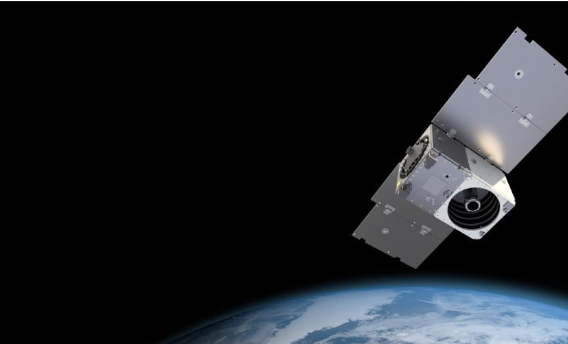

苹果升级卫星通讯功能 同步带动GaN PA商机
苹果推出在无网络讯号的情况下，用户可直连卫星通讯传送讯息的新功能。法新社
苹果（Apple）于WWDC 2024公布iOS 18，除众多新功能外，其中一项包括用户可在没有网络讯号的情况下，直接透过卫星通讯传送讯息。随着苹果新功能的推广，意味着市场对卫星数量的需求将大幅增加，有助GaN功率放大器（PA）销量成长。
苹果介绍，在iOS 18的简讯使用功能上，当用户无法接收到行动网络信号或Wi-Fi时，手机可以直连卫星实现讯息传送，该项功能目前仅限具备卫星讯号连接功能的iPhone 14与iPhone 15系列机种。
自苹果于2022年在iPhone 14系列推出卫星SOS紧急服务后，中系大厂如华为、Oppo、荣耀、Vivo也都跟进此功能。市场最新传出是Google预计在2024年下半推出的Pixel 9系列，也将搭载卫星通讯求救功能。
随着各家手机品牌大厂陆续推出卫星通讯功能，促使全球市场对卫星的需求迅速增加，而卫星数量增加对卫星通讯功能的稳定度或是传输速度也将有所帮助。
以低轨卫星龙头SpaceX在低轨卫星上的计划来看，预计于2027年前发射4.2万颗，此举有望促进卫星、手机通讯及车联网于射频前端需求，更有助带动GaN功率放大器出货成长。

目前美系Skyworks、Qorvo、和康电讯（Macom），及日系村田制作所（Murata）等都有布局。其中，Skyworks及Qorvo的主要客户为苹果（Apple）、中系手机品牌；台厂相关供应链业者则包括稳懋、宏捷科、全新光电、全讯等。
DIGITIMES Research分析师王尊民指出，通讯组件规格多数遵从于3GPP协议，苹果的新功能应不太影响化合物半导体组件后续规格，相关组件已内建基本功能，因此端视终端需求，开启后续通讯组件相关功能即可。
整体而言，卫星、基地台、手机、车联网彼此相辅相成，不过卫星通讯仍还在起步阶段，数量上每年只有数千颗的发射量。
砷化镓（GaAs）晶圆代工龙头稳懋近年积极切入卫星商机，即是看准随5G、B5G及6G通讯后续需求，使卫星通讯需求同步成长，目前在低轨道、中轨道、高轨道卫星接受器，都已有客户采用相关产品。
产业人士分析，稳懋现阶段切入卫星通讯，将有助于脱离5G通讯组件较为疲软的营收表现，同时也开拓通讯领域新市场。
由于GaN材料能在高频段提供更高的效率和效能，DIGITIMES Research认为，2024年GaN PA出货量预估占比虽仅5%，但随未来6G通讯时代来临，车联网、低轨卫星应用将相辅相成，将带动GaN PA需求量成长。
责任编辑：朱原弘